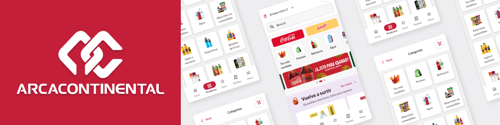
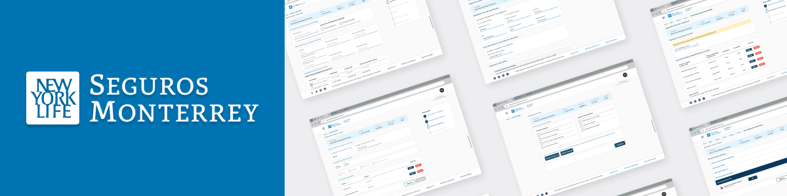
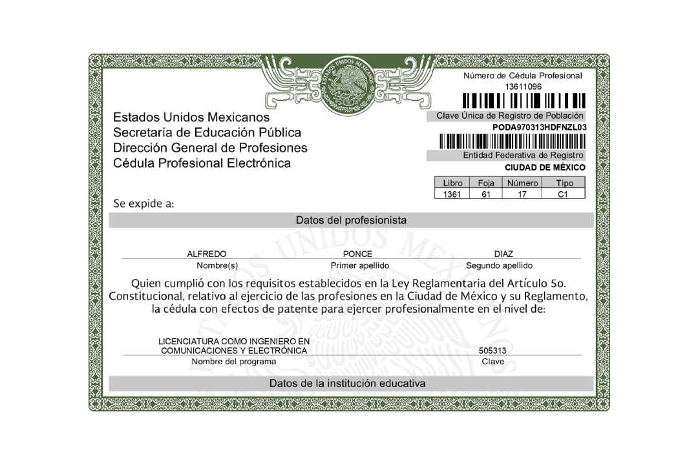
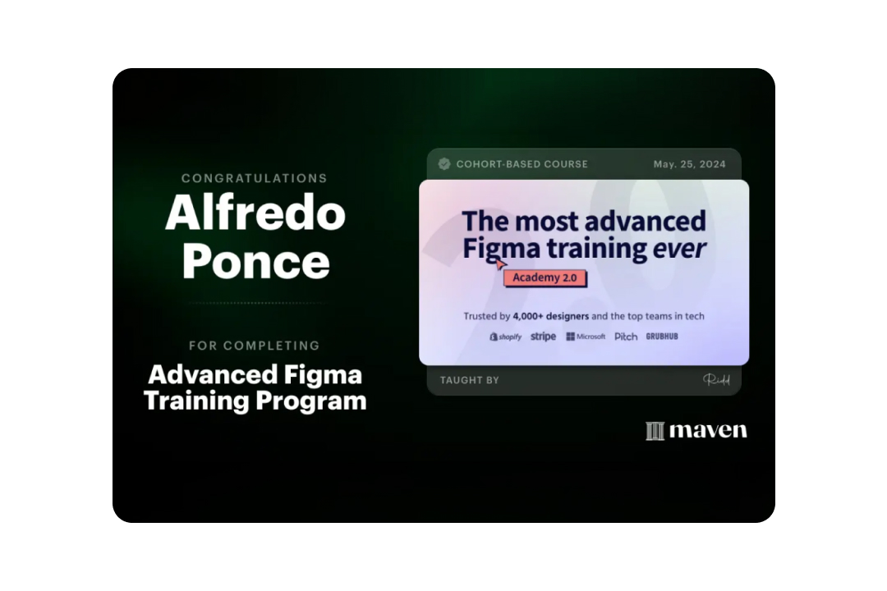

UX / UI Senior
Ecosistema Digital B2B
Rediseño del flujo de pedidos masivos para Arca Continental, optimizando la eficiencia operativa en campo y la toma de decisiones.
Explorar CasoSelección de soluciones digitales con enfoque en arquitectura de información, escalabilidad técnica y experiencia de usuario.

Rediseño del flujo de pedidos masivos para Arca Continental, optimizando la eficiencia operativa en campo y la toma de decisiones.
Explorar Caso
Simplificación de procesos complejos de cotización y autogestión de pólizas, reduciendo la carga cognitiva del usuario final.
Explorar CasoExploraciones en diseño y prototipado interactivo para optimizar el impacto visual.
Este artefacto surge de un análisis profundo sobre la percepción del tiempo...
Basado en la heurística de visibilidad del estado del sistema...
Diseño de un activo 3D optimizado para web...
Sustento teórico y rigor técnico detrás de cada decisión de producto.


Mentalidad de producto, lenguaje transversal e impacto estratégico.
Me especializo en crear sistemas visuales donde la estética no es solo un objetivo, sino una herramienta para resolver problemas de negocio. Mi enfoque me permite basar cada decisión en objetivos de producto y una arquitectura de información coherente, asegurando productos que priorizan la claridad y el rendimiento.
Valoro enormemente la fluidez en el handoff técnico. Entender las posibilidades de los stacks modernos me permite proponer soluciones que son, por naturaleza, viables y consistentes, permitiendo que el producto crezca sin comprometer su integridad técnica.
Creación de Design Systems con arquitectura modular y tokens que facilitan la implementación.
Dominio de las limitaciones del navegador, performance web y estándares de accesibilidad (a11y).
Estrategia basada en datos y prototipado de alta fidelidad que reduce el retrabajo en construcción.
Arsenal Tecnológico & Herramientas
Ya sea para resolver un reto técnico, colaborar en el diseño de un producto o simplemente saludar, mi bandeja de entrada siempre está abierta.
Curriculum Vitae
Portafolio de proyectos